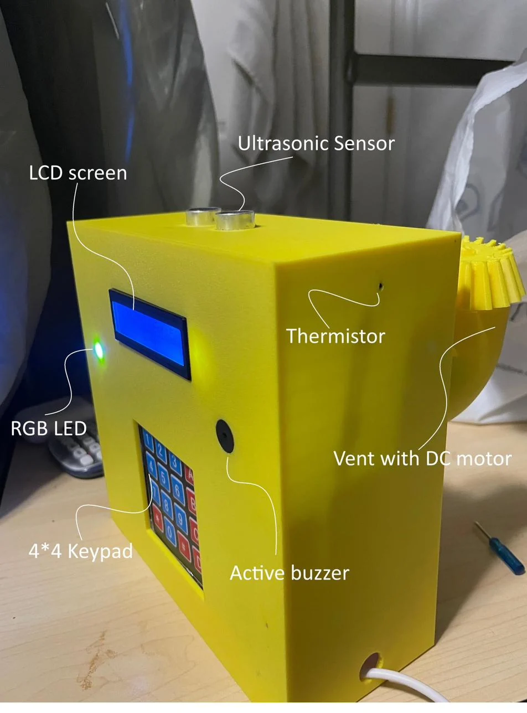
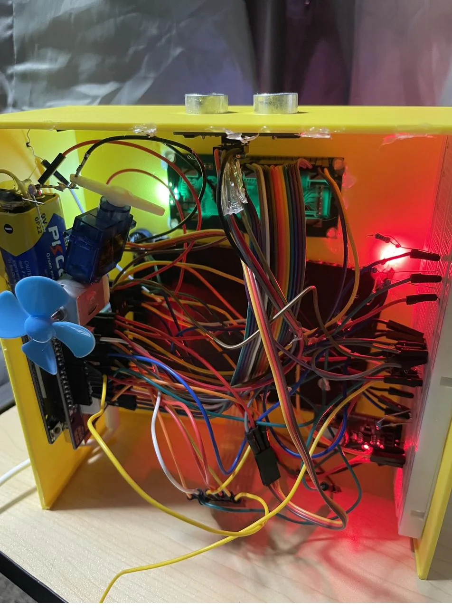
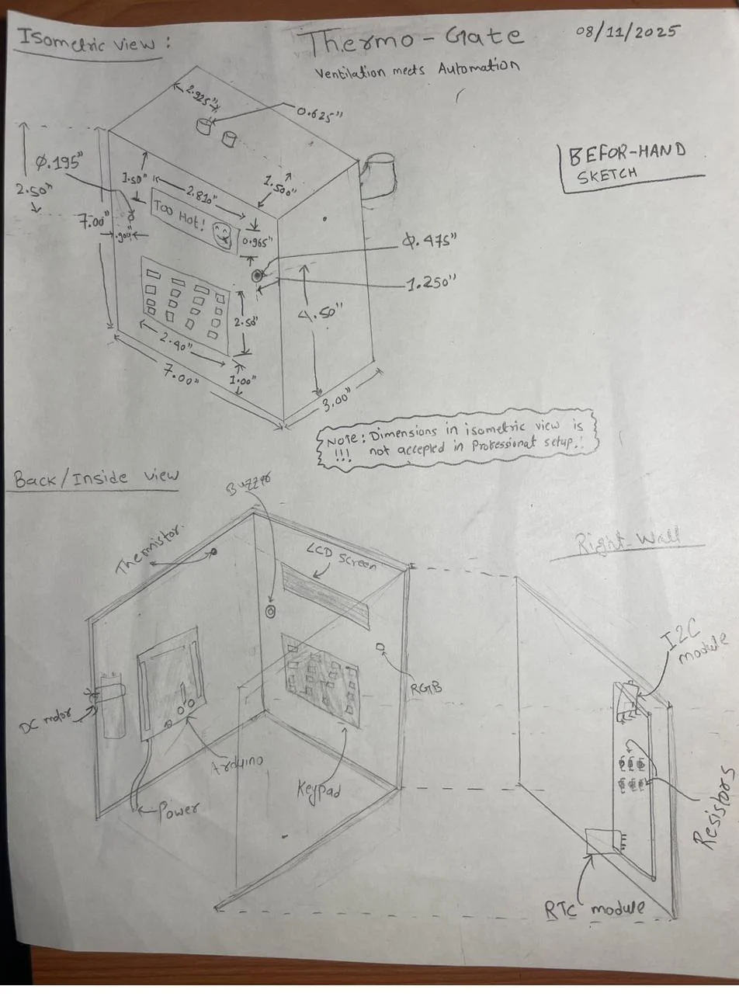

Electronics Integration · Solo Build
Thermogate
Temperature-Responsive Vent Prototype
I designed and built an Arduino-controlled vent system, from the SolidWorks enclosure to the wiring and firmware. A thermistor provides temperature feedback, a servo positions the vent, and a fan drives airflow.

Key Specs
| Role | Solo — CAD, print, wiring, firmware |
| Scope | ~10 components, Arduino Uno R3 |
| Materials | 3D-printed enclosure (PETG) |
| Process | SolidWorks → FDM print → hand wiring |
| Actuation | Servo-positioned vent + DC fan, one control loop |
| Sensing | NTC thermistor, ±2 °C rated, mounted outboard of the enclosure |
| Key spec | Recorded sensor reading within ±2 °C of setpoint in 90% of 120+ runs |
| Verification | Setpoint vs. achieved logged across 120+ runs; reading cross-checked against a reference thermometer |
| Deliverables | Enclosure model, wiring layout, Arduino sketch |
What I built
Thermogate combines temperature sensing, airflow control, and a user interface in a PETG enclosure. The keypad sets the target, the LCD displays the setpoint and sensor reading, and an RGB LED indicates status. I handled the mechanical design, printing, wiring, and firmware, with AI assistance for coding and debugging.

Design goal
I wanted a compact device that could respond to a temperature reading and make its operation easy to follow. The enclosure needed room for the components and wiring, access for maintenance, and a sensor position that measured the surrounding air.
Design and integration
I started with a sketch, modeled the enclosure in SolidWorks, and printed the parts in PETG. I connected roughly ten components around an Arduino Uno R3 and developed the feedback logic. I also added a clock, alarm, music player, and Celsius-to-Fahrenheit conversion.

Testing and scope
I compared the thermistor reading with a reference thermometer and logged setpoint against achieved temperature across more than 120 runs in a test chamber. My recorded readings were within ±2 °C of the setpoint in 90% of those runs. This describes the recorded test results; it does not establish independent temperature accuracy or performance in other environments. The fan and vent control airflow, so the temperatures they can achieve depend on the surrounding air and heat sources.
What testing changed
The thermistor initially picked up heat inside the enclosure. Moving it outboard helped it measure the surrounding air. Packaging also took several iterations: the enclosure had to stay compact while leaving room for wiring and access to components. The build taught me to check sensor placement before drawing conclusions about the control logic.
